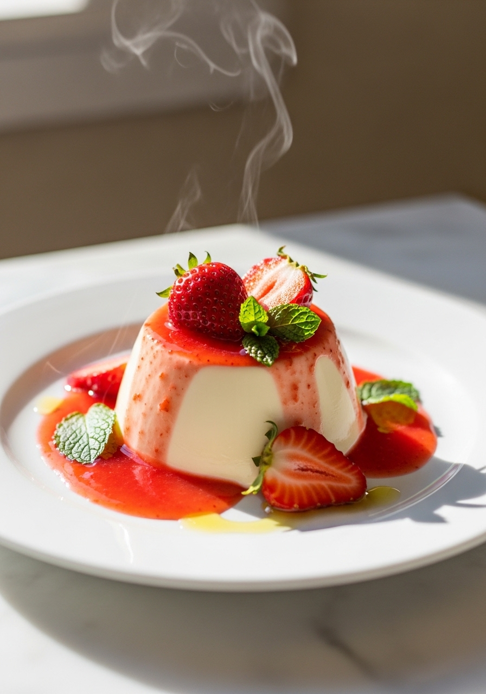
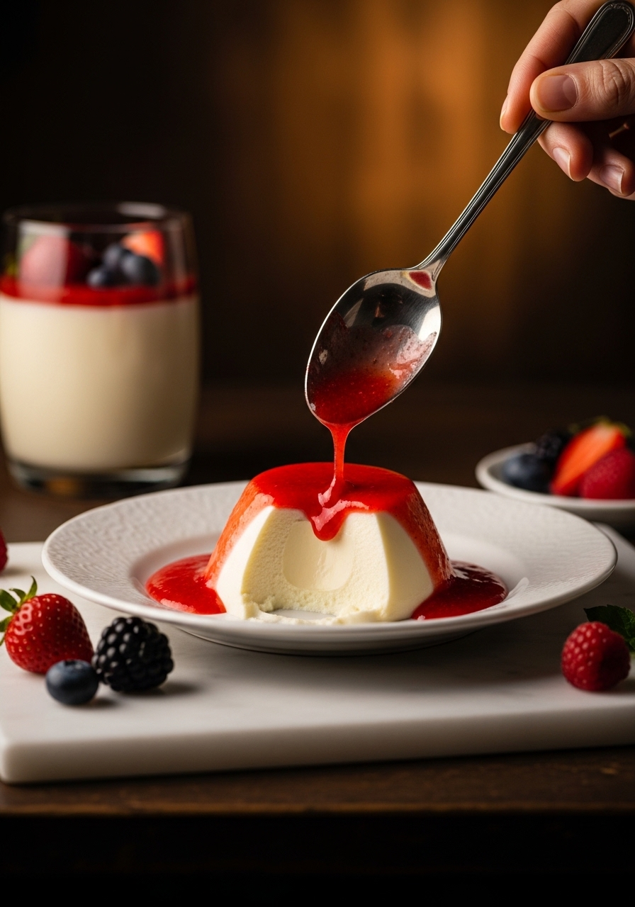

La panna cotta è il dolce italiano più elegante che puoi preparare con quasi nessuno sforzo. Solo panna, zucchero, vaniglia e una piccola quantità di gelatina — e basta. La panna cotta perfetta regge appena la forma, trema nel piatto e si scioglie completamente nel momento in cui tocca la lingua.

5 IngredientiLa caratteristica distintiva di una grande panna cotta è la consistenza: deve essere appena rassodata, con un delicato tremolio che ti dice che si scioglierà nel momento in cui tocca la lingua. Il nemico della panna cotta perfetta è troppa gelatina. Molte ricette eccedono e producono un risultato gommoso che sa più di gelatina aromatizzata che di un raffinato dolce italiano. Il rapporto in questa ricetta usa la quantità minima di gelatina necessaria per sformare in modo pulito — non di più.
La versione classica è alla vaniglia, ma la panna cotta è infinitamente versatile. Al caffè: aggiungi 2 tazzine di espresso alla panna. Al cioccolato: aggiungi 80g di cioccolato fondente dopo aver tolto dal fuoco. Al pistacchio: aggiungi 3 cucchiai di pasta di pistacchio. Al limoncello: aggiungi 2 cucchiai di limoncello e la scorza di 1 limone. Ogni variante segue la stessa tecnica — basta infondere il sapore nella panna calda prima di aggiungere la gelatina.
Ingredienti
Procedimento

La panna cotta è il dolce da preparare in anticipo per eccellenza. Si conserva in frigo fino a 3 giorni, coperta con pellicola. Puoi lasciarla negli stampini e aggiungere la salsa al momento di servire — non è necessario sformarla se la servi nei bicchieri. Anche la salsa di fragole si conserva per 3 giorni in frigo.
O la gelatina non si è gonfiata correttamente (servono 5 minuti interi in acqua fredda), non si è sciolta completamente nella panna calda, o la panna non era abbastanza calda. Alcuni enzimi dell'ananas e del kiwi freschi degradano la gelatina — evita le versioni fresche di questi frutti nella salsa.
Puoi usare metà panna e metà latte intero per un risultato più leggero, ma la panna intera dà la caratteristica ricchezza. Non usare latte scremato — la panna cotta non si raddensarebbe bene e avrebbe un sapore acquoso.
Sì, usando l'agar-agar (un'alternativa vegetale). Usa metà della quantità indicata per la gelatina — l'agar rassofa più sodo, quindi 1¼ cucchiaino per questa ricetta. Scioglilo nella panna fredda prima di scaldarla, poi fai sobbollire per 2 minuti per attivarlo.
Passa un coltellino sottile lungo il bordo interno. Immergi il fondo dello stampino in acqua calda per 10 secondi. Metti un piatto sopra e capovolgi con decisione in un solo movimento rapido. Non esitare — l'esitazione causa rotture.
Il coulis di fragole o frutti di bosco è il classico. La salsa al caramello salato è spettacolare. Una riduzione di aceto balsamico con fragole fresche è elegante e italiana. La salsa al caffè si abbina magnificamente alla panna cotta alla vaniglia. Quasi tutte le salse di frutta funzionano.